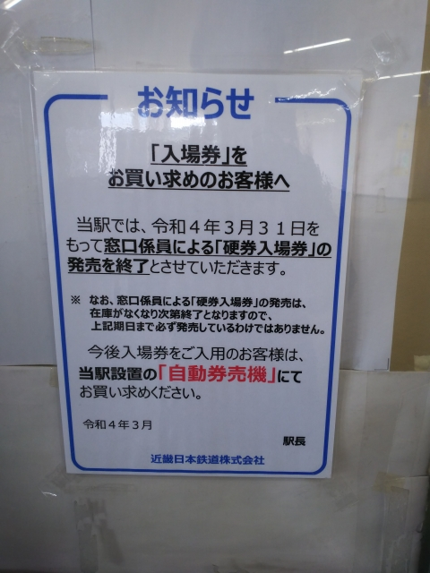
メインのネタの前に。
前の週の平日、とある近鉄の駅にて。
えっ？硬券の入場券を最近まで売ってたの？？
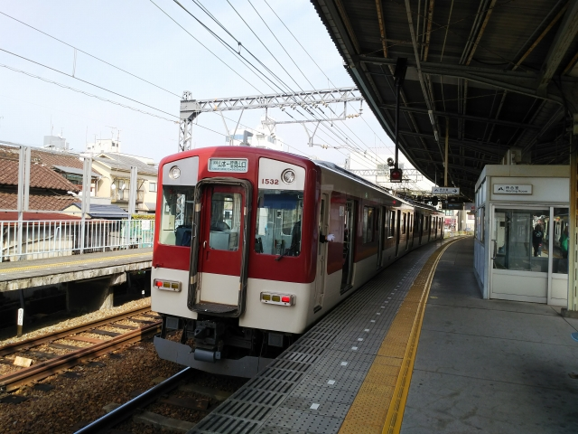
で、大阪のとある駅にやってきました。
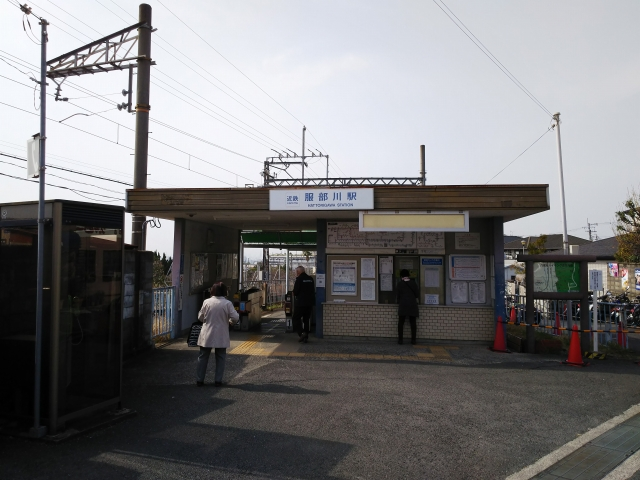
そして、とある駅で下車。のどかでよろしい。
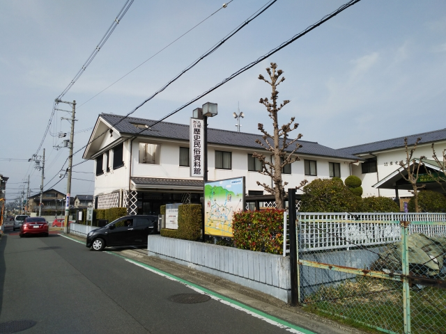
しばらく生駒のふもとを歩くと、見えてきました。
八尾市立歴史民俗資料館です。
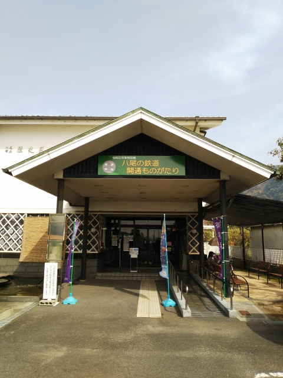
じゃじゃ～ん！ 特別展「八尾の鉄道 開通ものがたり」をやってます！
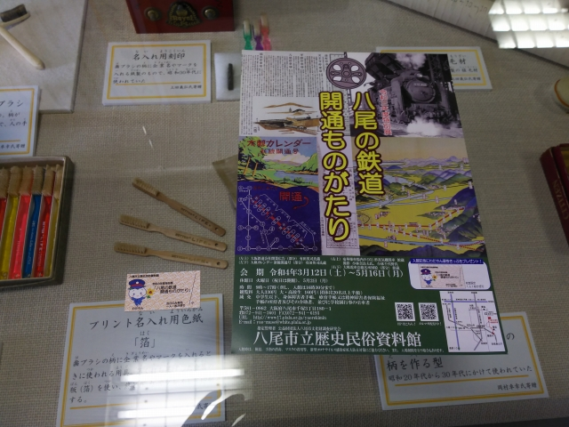
中は撮影禁止で残念ながら写真はございません。
印象的だったのは、竜華操車場の写真です。田んぼ
か 畑の真ん中に、ど～んと作ったんですね。
あえて沿線以外から行くほどの内容でもないですが、
なかなか興味深い展示でした。
あと、八尾って歯ブラシで有名やったんですね。
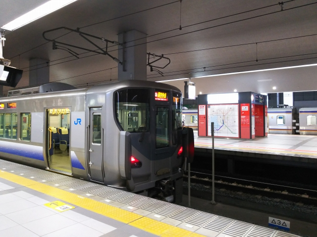
さて、メインのネタです。関西空港までやって来ま
した。
実は、今回は、関空発着の飛行機の遊覧ツアー初体
験です。
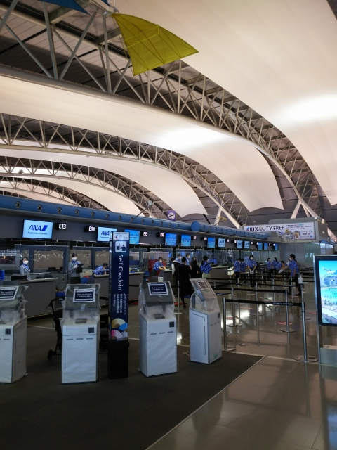
遊覧ツアーやのに、４Ｆの国際線フロアで受付かいな。 こんなに人おるん
やったら、２Ｆに一人ぐらい案内人 立たせとけや。
よーわからんかったから、２Ｆで探してたがな・・・
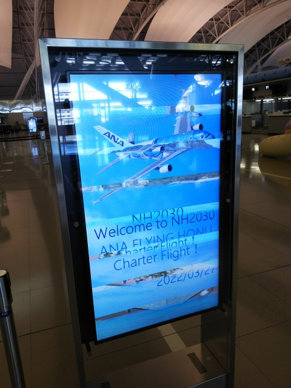
今回の遊覧飛行、関西には就航してない、Ａ－３８０を使った貴重なツア
です。
実は、今回、思い切ってビジネスクラスに申し込んで ます！自腹のビジネ
スは、初です！
ハワイ線専用機なので、ウミガメのデザインで、ＨＯＮＵって愛称みたい
です。
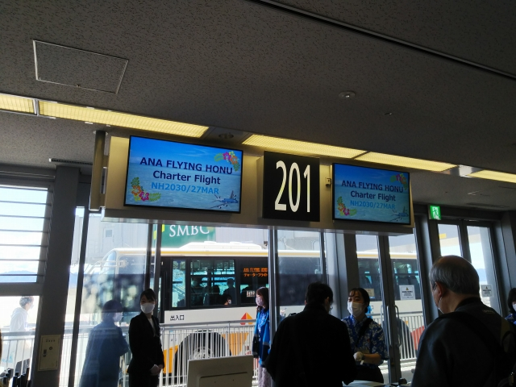
せっかく大金払ったっちゅうのに、なぜか乗り込む
の がエコノミーの連中の後。そんなもん、ハイクラ
ス順 にせんかいや。めちゃ腹立つ。普段は高い席か
ら乗せるくせに
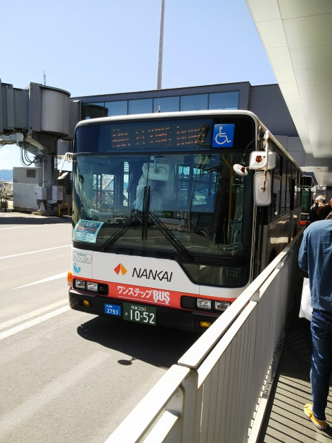
スマホのカメラではうまいこと写らんけど、わざわざ FLYING HONUって
表示してました。
南海バスも気合入ってますね。
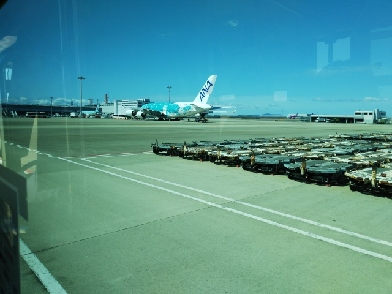
見えてきました！
世界最大の旅客機、Ａ３８０です。
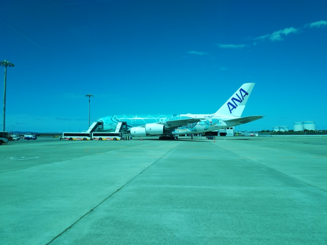
正直言うと、もっと巨大かと思ってました。あとで
調 べてみると、全長は７７７のほうが長いっすね。
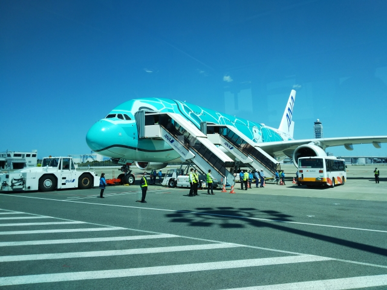
ただ、 胴回りの大きさはさすがで、２Ｆにも窓がず
らっと並 んでるのが印象的です。
手際が悪くて、バスの中でかなり待たされました。
せっかくのビジネスクラス、１分でも長く滞在した
いのに、結構イラつかせる企画です。
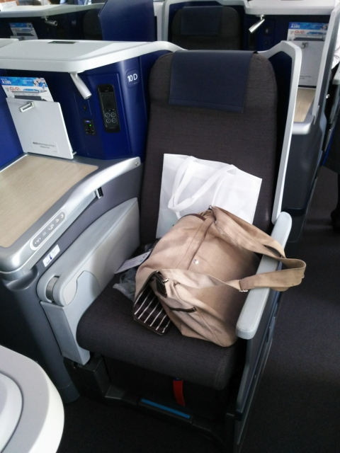
しかしさすがビジネスクラス。ＣＡさんが客一人ひと りに挨拶に来ましたわ。
もちろん、細かい不満は隠し て表面上は笑顔満載で受け答えしましたよ。
（大人 になったもんや）
となりの若いマニアっぽい兄ちゃんが、ＣＡさんに話 かけられてました。
大学の卒業記念とかなんとか聞こ えてきたけど、なんちゅう贅沢しとるん
じゃ！こっち は３０年も働いて、清水の舞台から飛び降りる気持ち で参加
してるっちゅうのに！！ お前みたいなんは社会に出てからつらい目に会え
っち ゅうねん・・・
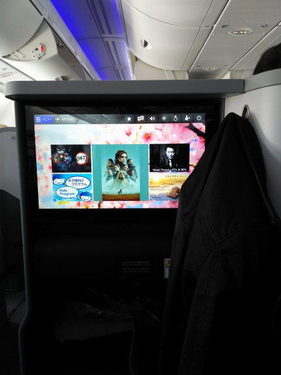
液晶画面がめちゃ大きい！
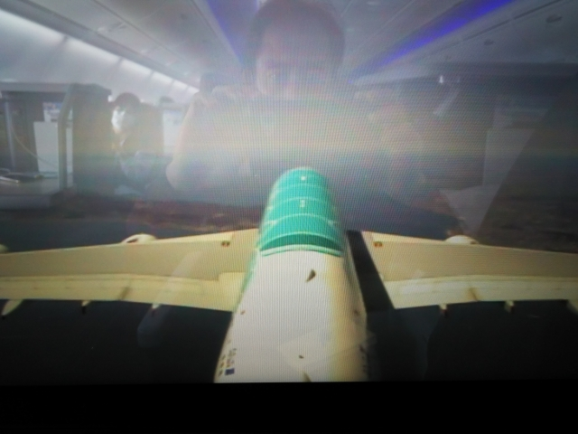
離陸スピードはえらい遅くて、ほんまに飛び立てる
んかいな？と不安になりました。
どこ飛ぶのか事前に案内はなかったのですが、明石
海 峡大橋を超えていきますね。 このあとアナウンス
があって、鳥取→福岡→四国上空 と通って、戻って
くるみたいです。 また福岡？！
※尾翼カメラ、前方カメラ、下方カメラの映像が液
晶画面に選択表示できます
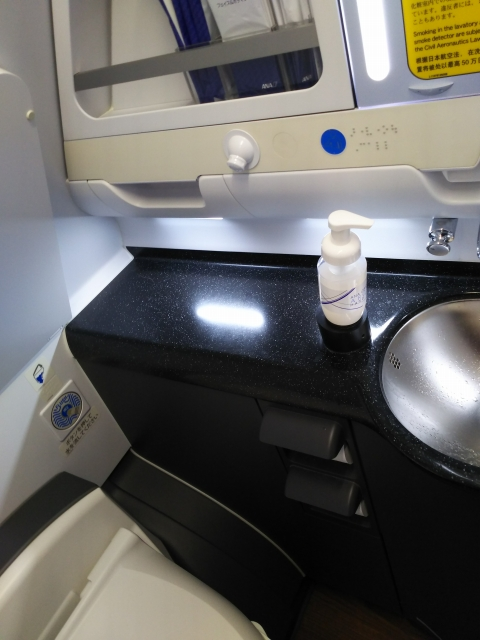
シートベルト外せるようになったので、早速トイレへ。めちゃ綺麗でし
た。
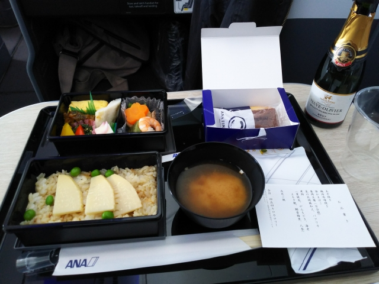
一番楽しみだった機内食ですが、なぜかプレミアム
エ コノミー席のものと同じ。なんか納得いかん。 こ
れで寿司でも出てきたらキレるところでしたが、食
べれる内容でひと安心。
しかし、みそ汁以外冷めてる で・・・。
いちびって スパークリングワインを頼みましたが、
グ ラスではなく、安っぽいペコペコのプラカップで
した。
昔、ビジネスに乗った時は、ガラスのグラスをぱち
っ て行った人がいたというのに・・・
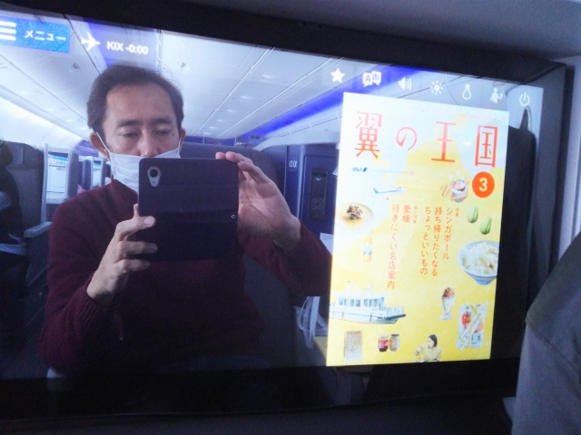
食事のあとは、まったく盛り上がらん抽選会。なん
と、 一等のＡ３８０の模型が、横のマニア兄ちゃん
に！１ 番違いやがな！！
なんかむかつく。 世の中って、こーゆーものなんで
しょうか・・・
ひまつぶしに機内誌でも、と思ったら、デジタル版し
かない・・・
そーこーしてる間に、あっとゆうまに関空に戻ってき
ました。
たった９０分のフライトでした。
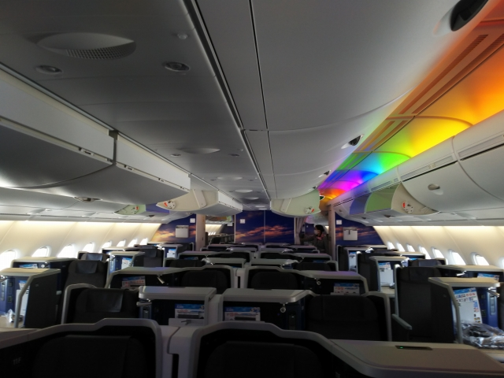
降りるのは最後まで粘りました。
ひどい話ですが、成田のツアーは、５０００円高い
も のの、飛行時間も倍、食事も通常のビジネスクラ
ス用 のものと、ほんま関西をなめとるわ。
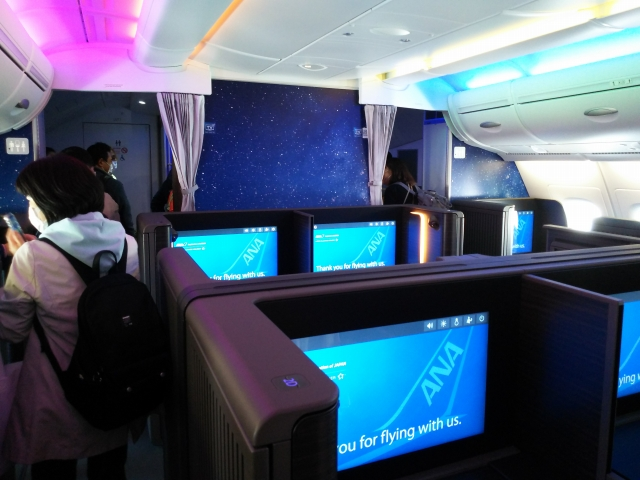
ファーストはこんな感じ。
２階席は、ファースト、ビジネス、プレミアムエコ
ノミーで、１階が全部エコノミーなんすね。
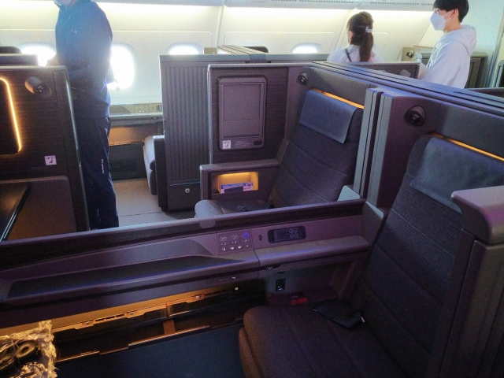
正直、そんな大したことないですね。
出るのに詰まってたので、ちょっと座らせてもらい
ました。
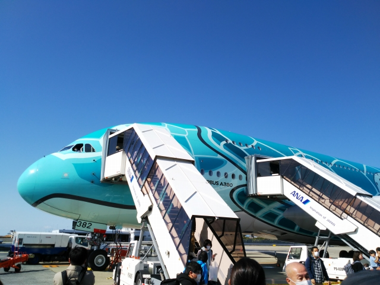
最後に撮影の時間があるって言うてたものの、デカ
す ぎて機体全部を収められる距離までは行けず。な
～ん それ！
いつか、海外でこれに乗ってみたいものです・・・